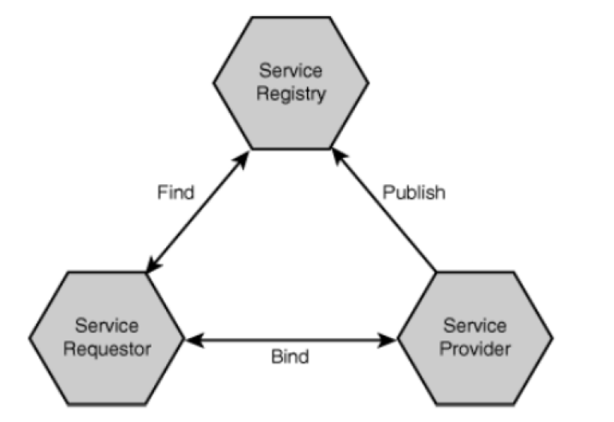

Web service and flask
What is Service-Oriented Architecture (SOA)?
- Service-oriented architecture (SOA) is a style of software design where services are provided to the other components by application components, through a communication protocol over a network (wiki). E.g., Authentication service, “vampire determination” service, data management service.
- We will learn “Docker” to wrap each component.
- Design focus: proper interface for component (familiar from component-oriented design methodologies)
- Goal: build software by composing services over a network

- Service provider actually provides service, publishes details in registry
- Service requestor finds services in registry and calls services
- Service registry acts as matchmaker between requestors (looking for services) and providers (offering services); once a match is made, the registry is no longer involved
- Figure Credit: “Building Web Services with Java”, 2nd Edition
Flask and SOA
- Project layout:
- Statistic: static files, usually js files, sometimes a company may pay to place this folder in a closer server near you to reduce loading time.
- Templates: html files, some html files may need to be dynamically generated with Jinja2
- .gitignore
- README.md: need to introduce the project purpose and how to start
- Markdown Cheatsheet: https://github.com/adam-p/markdown-here/wiki/Markdown-Cheatsheet
- requirements.txt
- Python files: main and util
- Let’s have a look at this Flask hello world example. Example 34.
- https://github.com/ruiwu1990/CSCI_4710_6710.git
- Pull right before the class, because there may be some changes…
- Virtual environment is very important. For example, version control of different libraries: jinja 2.10 or jinja 2.9
- Flask is a python framework.
- Here is the official Python tutorial: https://docs.python.org/3/tutorial/
- We do not have time to introduce Python but it should not be very hard…
- I will also introduce some basic things about Python through examples.
- All Flask applications must create an application instance
- app = Flask(__name__)
- The web server passes all requests it receives from clients to this object for handling, using a protocol called Web Server Gateway Interface (WSGI).
- Flask keeps a mapping of URLs to Python functions. The association between a URL and the function that handles it is called a route.
- Default port number is 5000.
- Flask Debug mode:
- it activates the debugger
- it activates the automatic reloader
- it enables the debug mode on the Flask application.
- Dynamically generate a HTML page with Jinja2.
- {{python_variable}}
- There are some other fancy ways…
- We will learn in the future.
- Let’s create a very simple service: generate a random number. Example 35.
- Server generate a JSON object and the client display the generated random number
- Python dictionary:
- Similar to JSON
- How to access: tmp_dict[“brand”]
- json.dumps: json encoder
- We also have JSONDecoder, but not used in this example
- Example: tmp_dict = { "brand": “Toyota", "model": “4Runner", "year": 2018}
- Jquery get request:
- .get(ULR, function(data){ do something with data})
- JSON.parse: turn your data into a JavaScript object
| Index | Prev | Next |